El presidente de Chile , Ricardo Lagos , visitó hoy Martes a las tropas de su país desplegadas en Timor Oriental y aseguró en Dili , la capital , que su Gobierno colaborará en la reconstrucción de esta pequeña nación.
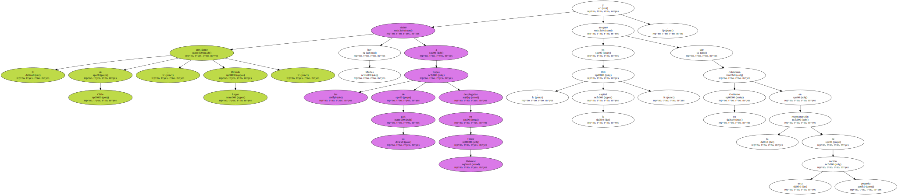Lagos se ha convertido en el primer jefe de Estado de Latinoamérica que visita Timor Oriental desde que sus habitantes votaron por la independencia en un referéndum celebrado el 30 de agosto de 1999 , y que fue precedido por una oleada de violencia y destrucción protagonizada por las milicias y soldados indonesios.
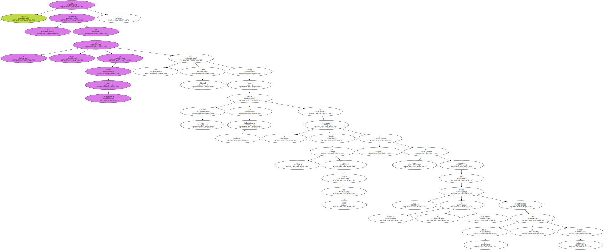Fuentes de la delegación chilena que acompaña a Lagos dijeron a EFE que se trató de una visita breve - de dos horas - pero muy " emotiva " , y detallaron que fue especialmente conmovedor el momento en el que el presidente se dirigió a los soldados chilenos destacados en Timor Oriental.
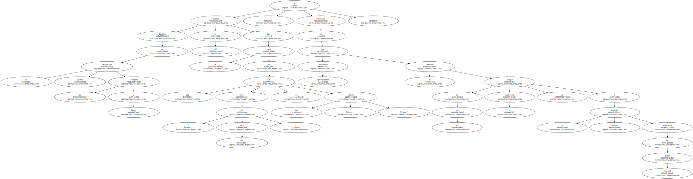" Aquí está Chile , que se expresa a través de ustedes " , dijo Lagos a los 33 miembros del pelotón de helicópteros del Ejército chileno , que llegaron a Timor Oriental el pasado agosto para reemplazar a sus compañeros que habían servido durante seis meses a las fuerzas de paz de Naciones Unidas.
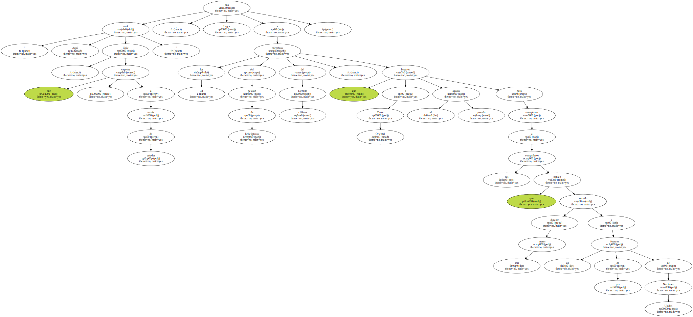" Ustedes constituyen - prosiguió el presidente - lo que en el siglo XXI serán las misiones de paz y forman la necesidad de que nuestro país contribuya a ello como parte de su responsabilidad internacional ".
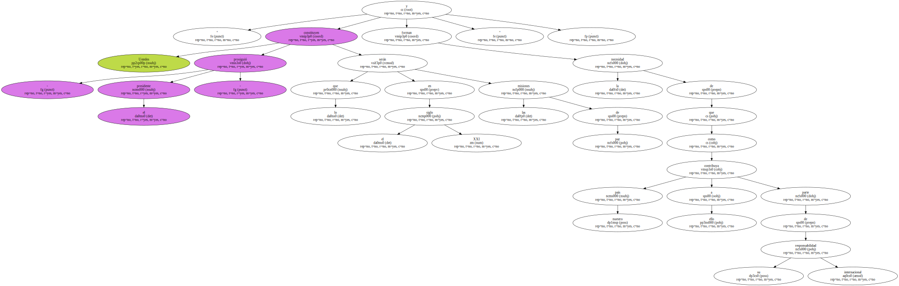Lagos añadió que " he venido a darles las gracias en nombre de Chile porque ustedes están colaborando para crear un país independiente ".
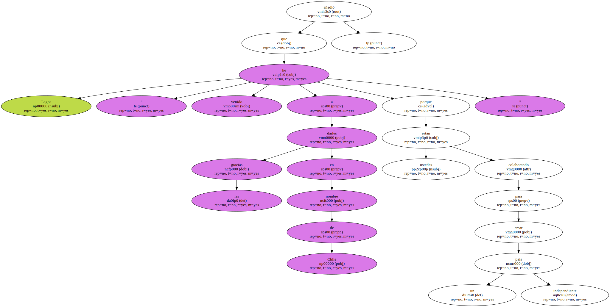Recordó que " lo que ocurre aquí ( Timor Oriental ) es similar a lo que ocurrió en 1817 en nuestro país , cuando los patriotas derrotaron a las fuerzas realistas , pero entonces no existían las misiones de paz y lo tuvimos que hacer solos ".

" Hoy existen las misiones de paz y nosotros estamos dispuestos a colaborar con ellas " , concluyó el mandatario chileno , tras comprometerse a mantener a sus tropas en este territorio hasta al menos febrero del 2002.
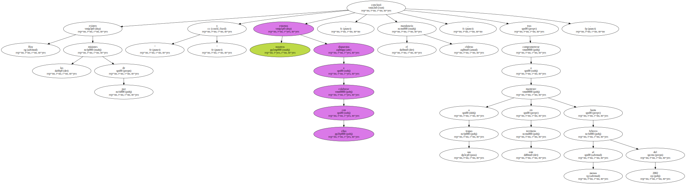Acompañado por el embajador de Chile ante Naciones Unidas , Juan Gabriel Valdés , y el Jefe del Estado Mayor del Ejército de Chile , el general Carlos Chacón , Lagos recorrió las instalaciones militares y habló sobre la misión chilena en el país.
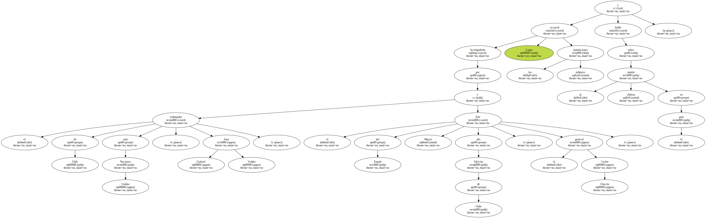A su llegada a Dili , el presidente latinoamericano se reunió con el jefe de la Administración Transitoria de Naciones Unidas para Timor Oriental ( UNTAET ) , Sergio Vieira de Mello , y con el presidente del Consejo Nacional para la Resistencia Timorense ( CNRT ) , Xanana Gusmao.
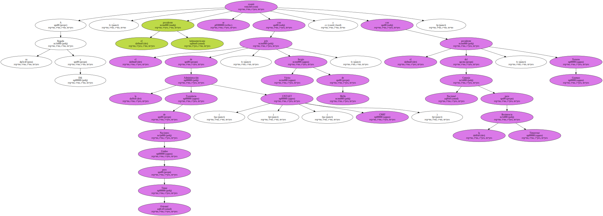Durante esta reunión , Lagos trató sobre la futura cooperación de Chile cuando Timor Oriental esté mejor estructurado y de la voluntad de su Gobierno de colaborar en la administración política , la formación de los partidos y la construcción del proceso de paz , declaró a EFE Diego Velasco Von Pilgrimm , consejero de la Embajada de Chile en Yakarta , quien acompañó en su visita al presidente.
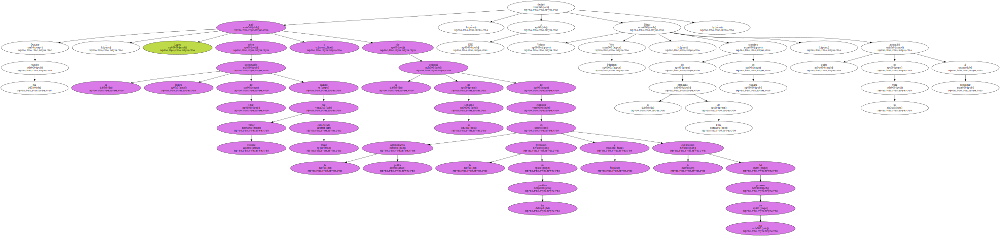Lagos se despidió de las tropas chilenas y de una decena de compatriotas que se encuentran en la nación del Pacífico compartiendo con ellos un tradicional vaso de vino y un pedazo de empanada chilena , explicó Velasco.
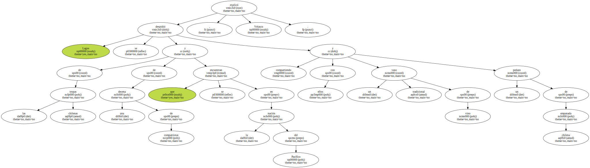El jefe de Estado chileno comenzó el pasado 10 de noviembre una gira por nueve países de Oceanía , Asia y América , acompañado por su ministro de Economía , José de Gregorio , y por el subsecretario de Relaciones Exteriores , Heraldo Muñoz , además de otros asesores en materia económica.

Antes de Timor Oriental , Lagos visitó Nueva Zelanda , donde se entrevistó con la primera ministra , Helen Clark ; y la turística isla indonesia de Bali , donde se reunió con la vicepresidenta del país , Megawati Sukarnoputri.
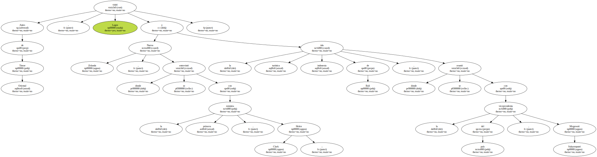El presidente chileno abandonó Dili con destino a Brunei , donde participará desde mañana en la cumbre del Foro de Cooperación Económica de Asia y Pacífico ( APEC ).
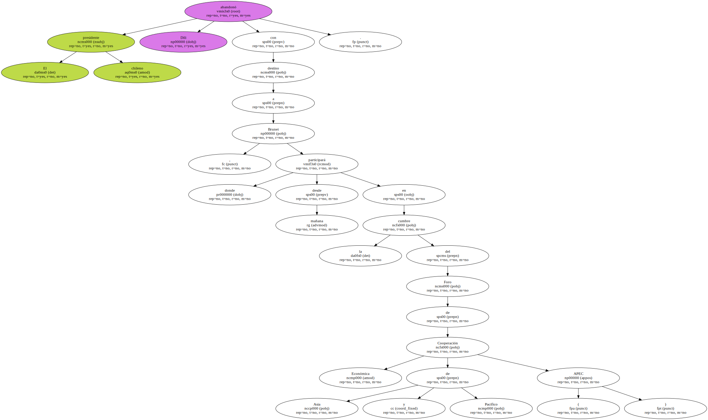